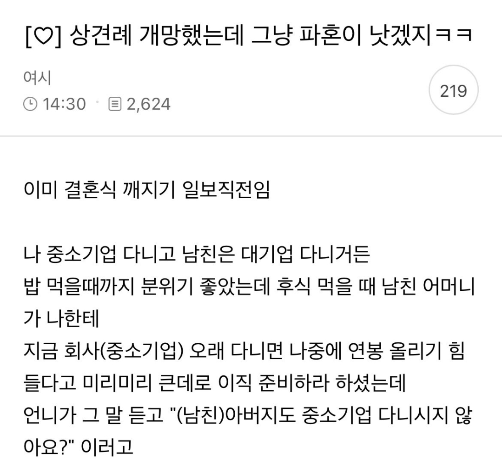
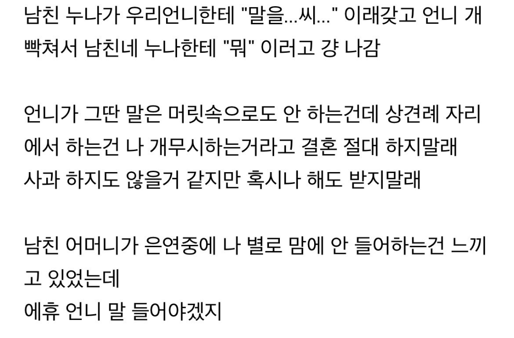
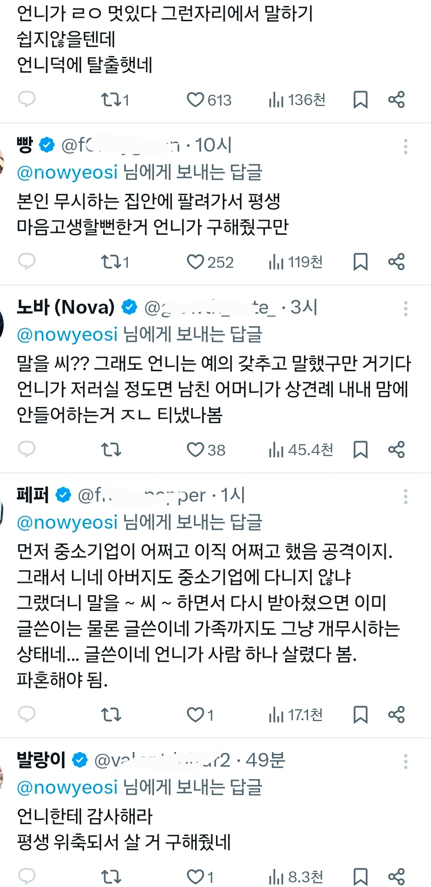

여자 셋이 모이면 접시가 깨진다
이딴 개뻘글은 걍 짱꺠가 쓰는 지뢰글이라 생각하는게 마음 편하다.
현실에서 이런일 없다.
역시 급여, 직종도 정규분포를 따르는지라
당연 저 글을 읽는 애들 중 대기업은 몇 % 되지도 않아서 그런가
글쓴애한테 감정이입하고 응원하는 댓글이 대다수네
시부모 될 사람들이 진짜 걱정돼서 한 말인지
쟤 말마따나 띠꺼워서 공격한건지 저 글만 보고 어찌 아누
ㅋ꙼̈ㅋ꙼̈ㅋ꙼̈ 옛말에 계집목소리가 크면 가세가 기운댓지
그냥 딱 한번 굽히면 끝나는데 ㅋㅋㅋㅋㅋㅋ
언니라는 사람이 바로 끝내버리네
병신년ㅋㅋㅋㅋ
아니 당연히 대기업 엄마 입장에서는 아쉬우니까 그럴 수 있다고 봄
걍 네~ 이직 준비 해볼게요~ 하고 마무리했으면 될 사안임
솔까 저 결혼 파토나면 여자가 아쉽지 남자가 아쉬움?
아싸 개이득 할걸
이건 성별 바뀌어도 똑같음 여혐 아님
애들이 회사 안다녀봐서 대기업 중소기업으로 하면 못알아먹으니까
롤로 치면 한명이 플레고 한명이 브론즈임
둘이 듀오를 한다고 하니까
플레 유저 친구들이
음.. 너 솔큐를 돌려서 골드까지는 좀 가는게 어떻겠니 하니까
브론즈 친구가
니 애비도 브론즈자나? 급발진한거임